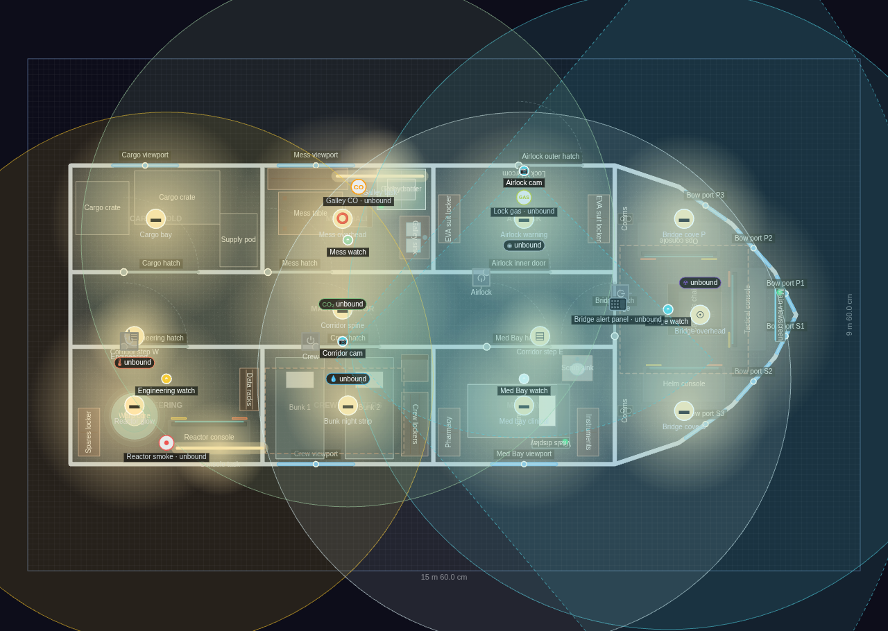
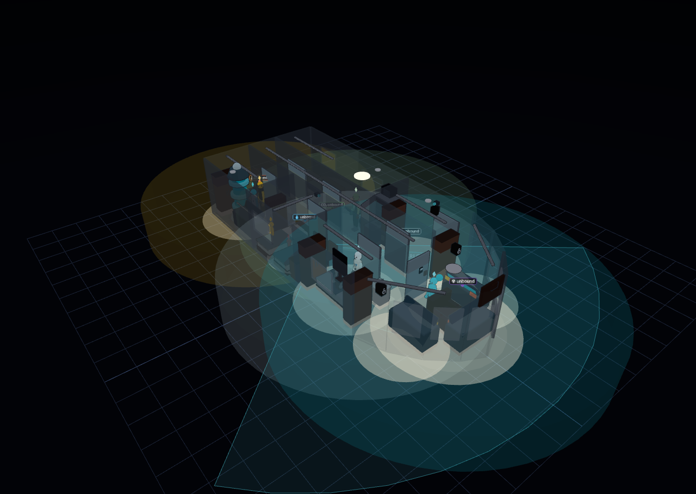
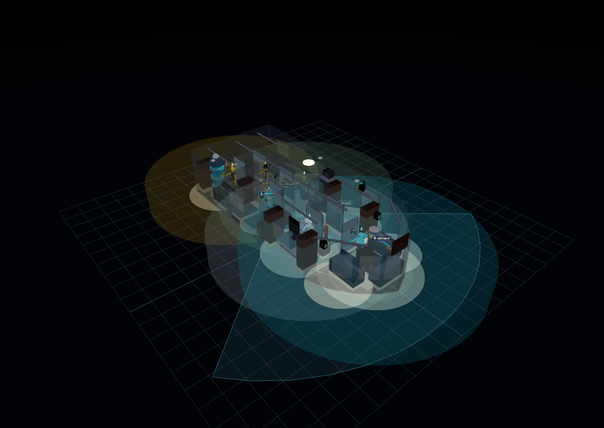

SSV Diorama — Starship Deck
Explore it live above, or import the JSON in Diorama under Settings ▸ Data ▸ Configurations ▸ Import.
~78 m² pressurised deck (15.6 × 9.6 m hull) · 1 floor · 8 compartments · crewed
A starship deck instead of a house. The "building" is a hull outline: a flat
stern to the west, two long parallel flanks, and an angular bow assembled from
six short wall segments converging on an apex — the classic wedge silhouette,
drawn entirely with ordinary walls. A full-length central corridor runs the spine
of the ship and every compartment hatches onto it, so the whole deck is one
connected walkable space (and one nav region).
BRIDGE (bow) — the captain's chair faces a wall-mounted main viewscreen at the
apex, flanked by three console banks (helm, ops, tactical) arranged in an arc,
comm speakers on the bulkhead, and six raked picture-window viewports wrapped
around the bow so the sky backdrop reads as space through the glass.
ENGINEERING (stern, starboard) — a stacked-cylinder warp core glowing cyan under
a reactor console, spares locker and data racks.
CARGO HOLD (stern, port) — three crates and a supply pod under plain bay lighting,
with a viewport onto the flank.
CREW QUARTERS (starboard) — two bunks in niches with a violet night strip, crew
lockers and a chair.
MESS HALL (port) — mess table with a bench and a chair, galley cooler with an
over-counter rehydrator, and a galley sink under warm task lighting.
MED BAY (starboard) — a med bunk, pharmacy and instrument cabinets, a scrub sink,
and a wall-mounted vitals display under clinical white strips.
AIRLOCK (port) — deliberately bare: two EVA suit lockers, an intercom, an amber
warning strip, and a genuine DOUBLE door — an inner hatch onto the corridor and
an outer hatch through the port hull.
CUSTOM OBJECTS — the warp core (base, glowing column, three light rings, cap and
a bright crown sphere) and the console bank (body, lip, raked screen bezel, a lit
screen face and two indicator panels) are authored ObjectRecipes carried in
Store.customObjects; the console bank is instanced four times at three sizes.
AVATARS — the deck crew are demo AI presences confined to their compartments
(bridge watch, engineering watch, med bay watch, mess watch) drawn from the
always-on base packs (Sci-Fi, Robotic, Aliens, Careers). The four free-range
roamers include a bridge command pair drawn from the `star-trek-tng` FRANCHISE
pack — franchise packs ship unloaded, so this config also sets Store.avatarPacks
to load and activate it.
LIGHTING — night preset, concrete deck plating, wall cutaway on and below-horizon
orbit enabled so the camera can duck under the hull. Every fixture is UNBOUND
with localState "on", so the ship is lit with no Home Assistant attached.
Deck 1
8 rooms · 150 m² footprint


Glass-house overview
